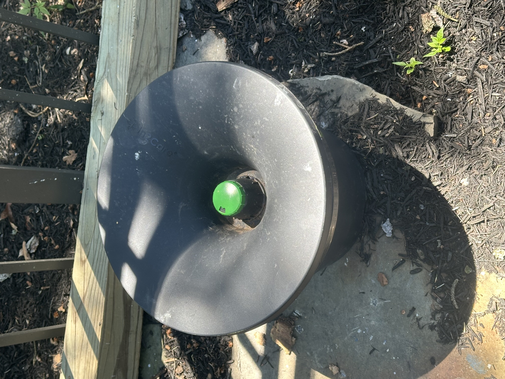
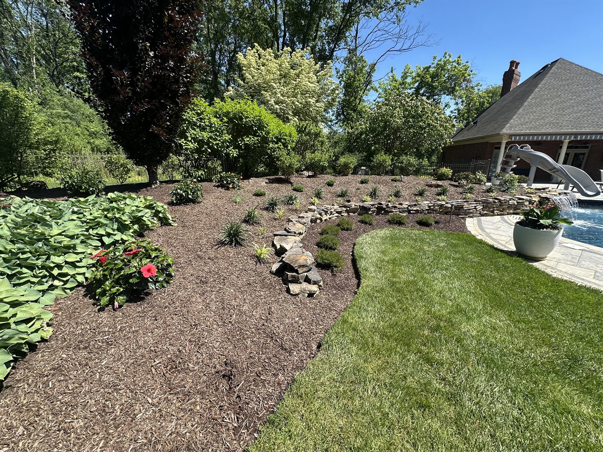

In2Care stations, EcoGuard Plus organic treatments, and tick perimeter work for West Shore properties — including the subdivisions backing onto Trindle Springs Creek, the Yellow Breeches corridor, and wooded buffer lots throughout 17050 and 17055.
Free Estimate — Call or Text 717-379-3248Mechanicsburg's West Shore subdivisions look pristine — but the same culs-de-sac that back onto stream buffers, drainage easements, and the Yellow Breeches Creek corridor are mosquito factories. Trindle Springs Creek, Bens Run, Cedar Run, and the Hogestown Run all push humid air and standing water into the new-construction neighborhoods off Trindle Road, Wertzville Road, and Route 114. Add the wooded common areas in newer developments and you have the perfect setup for both Asian tiger mosquitoes and deer ticks.
Cumberland County has the second-highest Lyme rate in Central PA. The blacklegged ticks responsible move into yards on resident deer and on mice nesting in wood piles, sheds, and stone walls — all extremely common in Mechanicsburg's larger lots.


Targeted application to the shaded resting zones where adult mosquitoes hide — ornamentals, shrubs, mulched beds, fence lines, and tree canopy underside. Reapply every 3–4 weeks during the active season.
The single best tool for new-construction Mechanicsburg subdivisions where every yard has hidden water features — drainage swales, sump-pump discharge, decorative ponds, kids' pools that don't get emptied. Stations hit those breeding sites passively.
EPA-exempt essential-oil barrier with 30-day repellency. Real organic, not "low-impact synthetic." For families with pollinator gardens, dogs, vegetable beds, or chemical sensitivities.
For properties along the Yellow Breeches, Conodoguinet, or any wooded buffer. We treat the lawn-woodline edge, leaf litter, and stone walls where mice and ticks transit. Stand-alone tick work is a separate visit pattern from mosquito barrier.
Most West Shore yards have 3–6 hidden water sources. We walk the property looking for things you've stopped noticing — clogged downspouts, tarps, low spots, dripping irrigation heads, untreated drainage swales.
Outdoor wedding at one of the Yellow Breeches venues? Backyard graduation? Family reunion? Single application 24–48 hours before. Book ahead — summer Saturdays fill up.
Subdivisions off Trindle Road, Wertzville Road, Williams Grove Road, and Route 114. Older borough lots in 17055. Newer developments in Silver Spring Township and Hampden Township (17050). Properties along the Yellow Breeches Creek, Hogestown Run, and Trindle Springs Creek corridors. Homes near Cumberland Valley schools and the Carlisle Pike corridor.
Locally owned. Licensed and insured. Bee-safe and organic options. Serving Mechanicsburg, Silver Spring Township, Hampden Township, and the West Shore.
Call or Text 717-379-3248